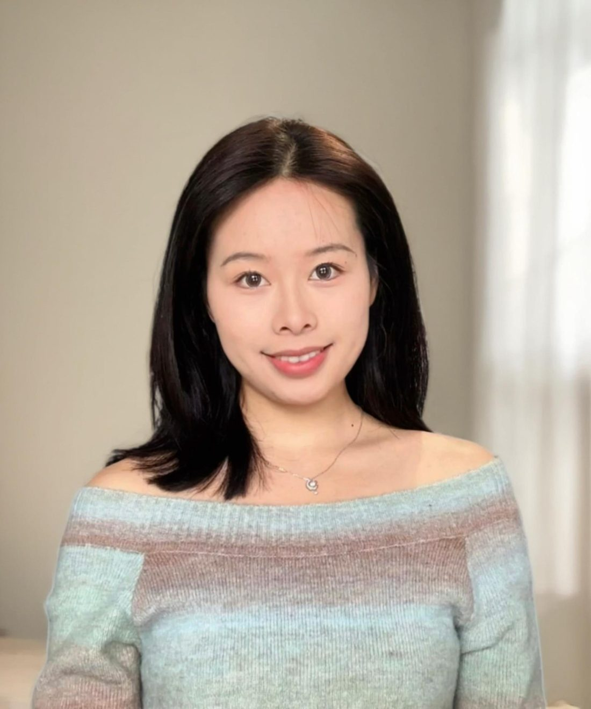
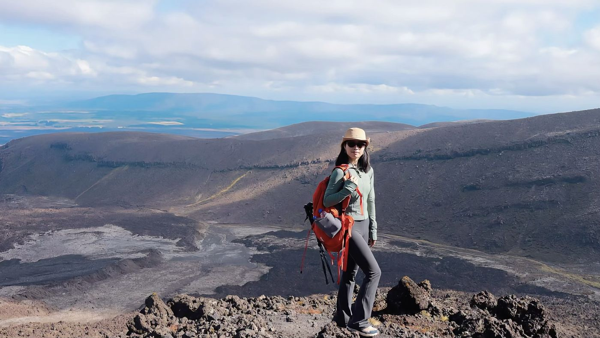
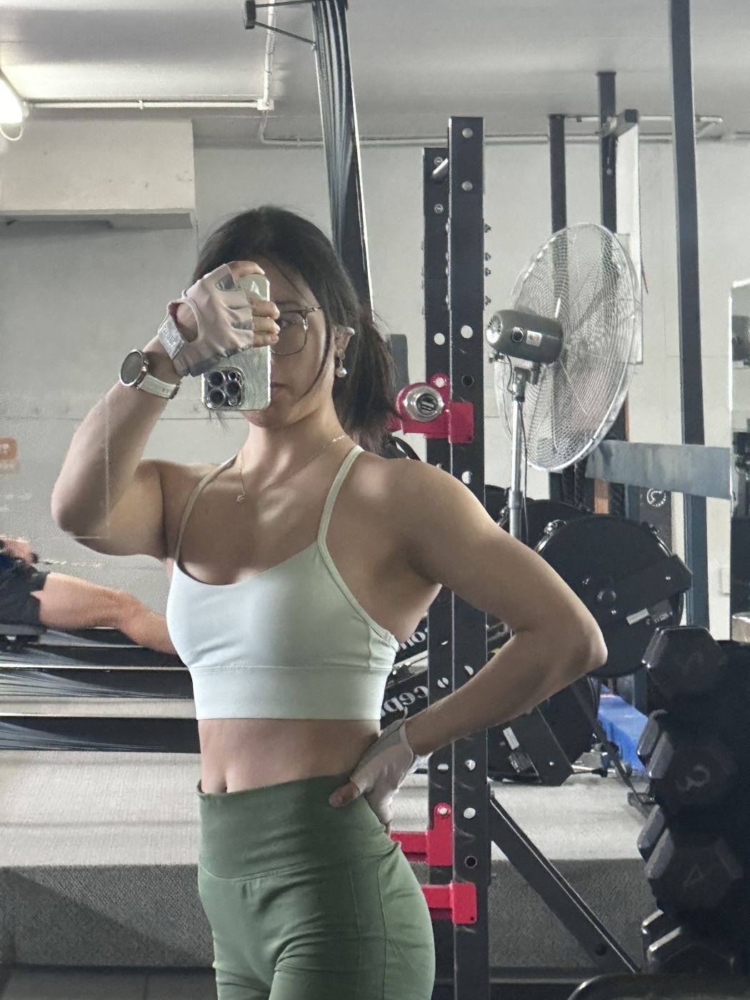
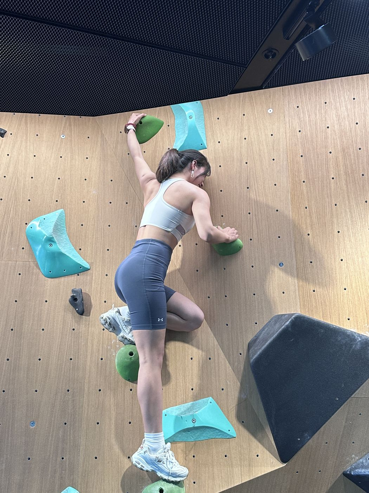
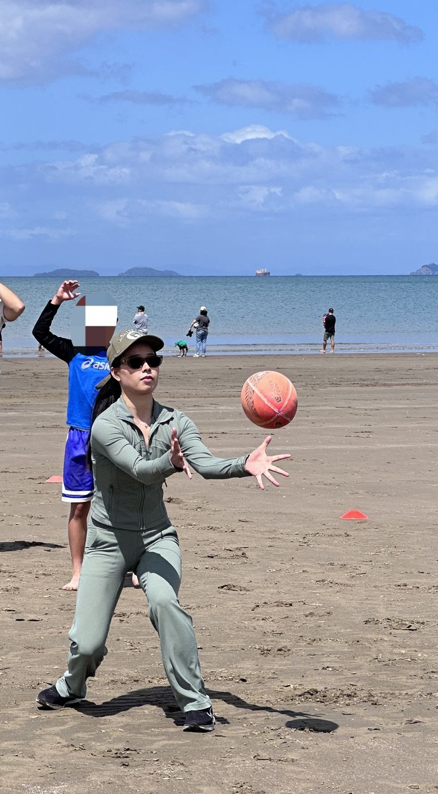

Occupational biomechanics
Joint kinematics and kinetics, inverse dynamics, lumbar loading and manual handling.
Biomechanics · Ergonomics · Research software
I am a doctoral candidate at the University of Auckland, nearing thesis submission. My work connects digital human modelling, markerless motion capture, occupational biomechanics and practical decision support.

My doctoral research addresses two phases of ergonomic support: predicting working posture before a task or workstation exists, and assessing postural and biomechanical exposure once it does.
The work spans experimental biomechanics, computer-vision-based motion analysis, statistical evaluation and application development. The unifying question is practical: how can rigorous movement evidence become accessible, repeatable support for safer work?
Joint kinematics and kinetics, inverse dynamics, lumbar loading and manual handling.
Single- and multi-view pose estimation, experimental comparison and validity boundaries.
Posture prediction, constrained optimisation and three-dimensional reconstruction.
Python applications, data pipelines, interactive visualisation and automated reporting.
A web application that turns an ordinary workplace video into postural risk, manual-handling and biomechanical outputs, with an automatically generated report. Its design, development and evaluation form the core of the doctoral research.
Ergonomic evaluation at the design stage requires reliable estimates of working posture before a workstation or tool is physically built.
This hybrid two-phase framework predicts whole-body posture from task specifications alone: hand and foot positions, external load and individual anthropometry. Rather than solving a single high-dimensional 3D optimisation, the framework decomposes the problem. Constrained sagittal-plane optimisation determines lower-limb and trunk posture, and the 3D upper-limb configuration is then resolved analytically in closed form, without iterative search.
MATLAB · constrained optimisation (SQP) · inverse kinematics · Vicon validation
Markerless motion capture offers a low-cost, portable alternative to laboratory systems, yet its validity for occupational manual handling had not been established.
This study evaluated a multi-view system (OpenCap) and a single-camera pipeline (MediaPipe) against a marker-based reference (Vicon) across three lifting tasks of increasing complexity. Both systems were suitable for preliminary screening of symmetrical, sagittal-plane lifting, but accuracy declined substantially in tasks involving trunk rotation and walking.
Python · OpenCap and MediaPipe pipelines · Vicon · RMSE, R² and REBA agreement
Research Assistant
The University of Auckland · Jun 2026 – present
PI: Assoc. Prof. Yanxin Zhang · Video-based motion analysis system
Lead developer of a markerless system for human movement analysis from ordinary single-camera video, requiring no markers, force plates or laboratory set-up.
Walking kinematics, joint loading and muscle-level estimates for human movement analysis.
Lifting and handling tasks, including lumbar loading estimation, for workplace injury prevention.
Objective movement measures to support preliminary screening and progress tracking in rehabilitation.
Technical contributions: adapting the markerless pose model, including added neck degrees of freedom; fine-tuning a deep-learning model that predicts ground reaction forces from video-derived motion, which cut force-prediction error by about half in lifting tasks; and linking it with musculoskeletal simulation and a web interface.
Python, MATLAB, pandas, NumPy, SciPy, SPSS and Excel.
MediaPipe, OpenCap, OpenCV, PyTorch, LoRA fine-tuning and cross-validated model evaluation.
Vicon and Cortex workflows, Visual3D, OpenSim, markerless motion capture and inverse dynamics.
Streamlit, Plotly and ReportLab for interactive tools and automated reports.
Repeated-measures studies, concurrent validity, agreement analysis, systematic review and scientific communication.
Sport keeps me curious about how bodies move and adapt. Most weeks include strength training and a swim; weekends are for trails, the climbing wall and team games. Feeling load, fatigue and technique first-hand keeps my biomechanics grounded.



Team sport
Fast decisions, shared effort and a lot of running.

Contact
I welcome conversations about academic, postdoctoral and industry opportunities where biomechanics, human factors and computational tools meet.
我的博士研究覆盖人体工效学支持的两个阶段：在任务或工作站尚未建立时预测工作姿态，以及在任务实施后评估姿势与生物力学暴露。
研究融合实验生物力学、基于计算机视觉的动作分析、统计评价和应用开发。核心问题是：如何把严谨的人体运动证据转化为更易获得、可重复的安全工作决策支持？
关节运动学与动力学、逆动力学、腰椎负荷和手工搬运。
单视角与多视角姿态估计、实验比较及效度边界。
姿态预测、约束优化和三维重建。
Python 应用、数据流程、交互可视化和自动报告。
把普通工作现场视频转化为姿势风险、手工搬运与生物力学评估结果，并自动生成报告的网页应用。系统的设计、开发与评价是本人博士研究的核心工作。
在设计阶段开展工效学评估，需要在工位或工具实际建成之前，可靠地预估作业姿态。
该混合两阶段姿态预测框架仅依据任务参数（手足位置、外部负荷与个体人体测量学参数）即可预测全身姿态。框架将问题分解求解：先以矢状面约束优化确定下肢与躯干姿态，再以解析方法闭式求解三维上肢构型，无需迭代搜索。
MATLAB · 约束优化（SQP）· 逆运动学 · Vicon 验证
无标记动作捕捉为实验室系统提供了低成本、便携的替代方案，但其在职业手工搬运任务中的效度尚未得到验证。
本研究以标记点系统（Vicon）为参考，评价了多视角系统（OpenCap）与单摄像头方案（MediaPipe）在三类复杂度递增的搬举任务中的同期效度。两者适用于对称矢状面搬举的初步筛查，但在涉及躯干旋转与行走的任务中，准确度明显下降。
Python · OpenCap 与 MediaPipe 流程 · Vicon · RMSE、R² 与 REBA 一致性
研究助理（Research Assistant）
奥克兰大学 · 2026 年 6 月至今
项目负责人：Yanxin Zhang 副教授 · 基于视频的动作分析系统
主要开发者：基于普通单摄像头视频的无标记人体运动分析系统，无需标记点、测力台或实验室环境。
步行运动学、关节负荷与肌肉层面估计，用于运动功能评估。
针对搬举与搬运任务，估算腰椎负荷等指标，服务职业损伤预防。
提供客观的运动指标，支持康复评估中的初步筛查与康复进程追踪。
技术贡献：改进无标记姿态模型并新增颈部自由度；微调由视频运动数据预测地面反作用力的深度学习模型，在搬举任务中将预测误差降低约一半；并将其与肌骨仿真和网页界面打通。
Python、MATLAB、pandas、NumPy、SciPy、SPSS 与 Excel。
MediaPipe、OpenCap、OpenCV、PyTorch、LoRA 微调与交叉验证模型评价。
Vicon 与 Cortex 工作流、Visual3D、OpenSim、无标记动作捕捉和逆动力学。
使用 Streamlit、Plotly 与 ReportLab 构建交互工具和自动报告。
重复测量研究、同期效度、一致性分析、系统综述和科学沟通。
运动让我始终对人体如何运动、如何适应保持好奇。平日里有力量训练和游泳，周末去徒步、攀岩或参加团队运动。亲身体会负荷、疲劳与技术动作，也让我的生物力学研究更接地气。
团队运动
快速决策、共同拼搏，还有大量奔跑。
联系
欢迎就高校、博士后或企业岗位与我联系，尤其是生物力学、人因工程和计算工具交叉方向。